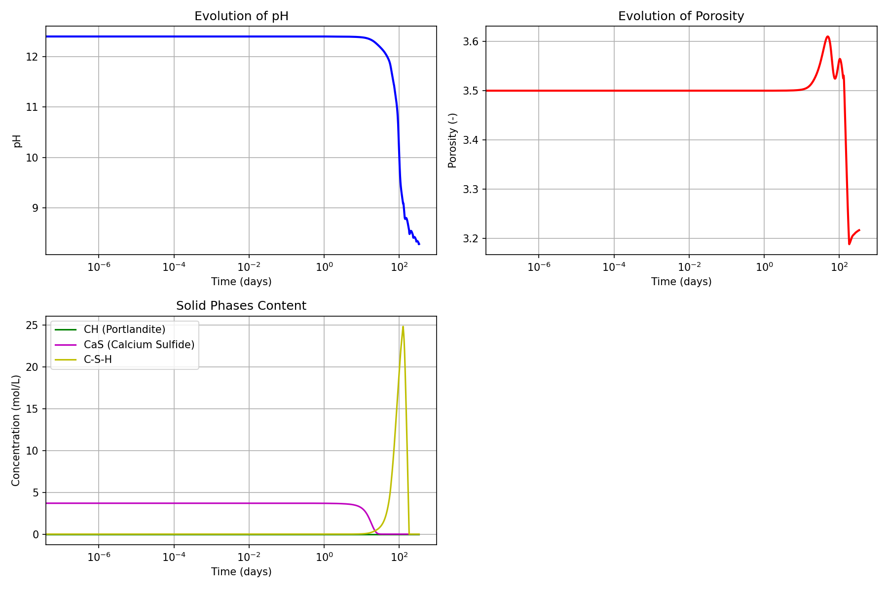

Modèle Yuan1 — Attaque au Sulfure d'Hydrogène (H₂S) du béton
Fichiers sources :
src/Models/ModelFiles/Yuan1.c·test_examples/Yuan1/Yuan1Auteurs du modèle : B. Yuan, P. Dangla (Janvier 2015)
Table des matières
- Contexte et objectif
- Hypothèses
- Variables et notation
- Modèle mathématique
- 4.1 Équations de conservation et transport
- 4.2 Chimie et équilibres acido-basiques
- Conditions aux limites et initiales
- Cas test : Corrossion 1D gazeuse (
test_examples/Yuan1) - Résultats de la modélisation
- Description pas-à-pas des fichiers d'entrée
- Références bibliographiques
1. Contexte et objectif
Le modèle Yuan1 modélise de façon mécanistique l'interaction chimique des matériaux cimentaires avec le gaz sulfure d'hydrogène (\(H_2\)S). C'est l'un des phénomènes majeurs initiant la corrosion biogénique dans les réseaux d'assainissement (avant même l'apparition bactérienne d'acide sulfurique fort).
L'objectif est d'évaluer la cinétique de dissolution des hydrates principaux du ciment (Portlandite CH, C-S-H) lorsque le pH interstitiel chute sous l'effet du \(H_2S\) dissous (gaz acide faible), conduisant à la précipitation massive de macro-sels comme le Sulfure de Calcium (\(CaS\)).
2. Hypothèses
- Diffusion Multi-Espèces et Électroneutralité : Tous les apports ioniques modifient le potentiel électrocinétique croisé des fluides (équation de Poisson/Electroneutralité via potentiel \(\psi\)).
- Phase Gazeuse Implicite : Le gaz \(H_2S\) se dissout à la limite du domaine selon la loi de Henry.
- Réactivité C-S-H Dynamique : Le modèle intègre une désolidarisation continue des silicates de calcium modélisée à l'aide d'une courbe externe (fichiers
csh3poucsh4pintroduisant un coefficient C/S ajustable aux conditions de pH locales).
3. Variables et notation
Le modèle s'appuie sur un grand système couplé de 6 degrés de liberté nodaux.
Inconnues primaires
| Symbole | Intitulé BIL | Signification |
|---|---|---|
| \(c_{\text{H}_2\text{S}}\) | logc_h2s / c_h2s |
Concentration en Sulfure d'hydrogène (généralement calculée en logs) |
| \(\psi\) | psi |
Potentiel électrique local (diffusion ionique de Nernst-Planck) |
| \(Z_{\text{Ca}}\) | z_ca |
Inconnue conservative inter-phases pour l'ion Calcium (dissous + solide) |
| \(Z_{\text{Si}}\) | z_si |
Inconnue conservative inter-phases pour la Silice |
| \(c_{\text{K}}\) | c_k |
Concentration en ions Potassium alcalins |
| \(c_{\text{Cl}}\) | c_cl |
Concentration en ions Chlorures environnementaux |
Variables Explicites ou Intermédiaires
- Solides :
N_CH(Molarité de Portlandite),N_CaS(Molarité de sulfure de calcium),N_CSH. - pH / \(c_{\text{OH}}\) : Tiré implicitement du calcul thermodynamique avec l'équation de neutralité des charges internes.
- Porosité libre du réseau capillaire, évoluant en fonction de l’encombrement molaire des phases.
4. Modèle mathématique
4.1 Équations de conservation et transport
Les 6 bilans de conservation régissent l'accumulation et le flux stoechiométrique :
1. Soufre (E_S) : Balance du S total environnant (comprenant les ions HS⁻, S²⁻, le gaz dissous et le solide CaS).
2. Électroneutralité (E_q) : Accumulation des densités de charges N_q.
3. Calcium (E_Ca), Silicium (E_Si), Chlore (E_Cl), Potassium (E_K).
La migration des différentes espèces liquides vers le cœur du béton est donnée par la loi des flux de Nernst-Planck \(\mathbf{W}_i = - D_{eff} \left( \nabla c_i + z_i c_i \frac{F}{RT} \nabla \psi \right)\).
4.2 Chimie et équilibres acido-basiques
Le code calcule statiquement les concentrations à l'aide de constantes globales (Loi d'action de masse) : - Acidité du H₂S : \(H_2S \rightleftharpoons HS^- + H^+\) ; \(HS^- \rightleftharpoons S^{2-} + H^+\) - Solubilisation : CH \(\rightleftharpoons\) Ca²⁺ + 2OH⁻ (Constante \(K_{CH}\)) et \(CaS \rightleftharpoons Ca^{2+} + S^{2-}\) (\(K_{CaS}\)).
Dès que \(C_{H2S}\) en surface ou en profondeur dépasse \(C_{eq_{H2S}}\), le seuil thermodynamique indique la dissolution irréversible de N_CH pour basculer vers N_CaS.
5. Conditions aux limites et initiales
Contrairement aux autres mécanismes d'intrusion qui contraignent \(p_c\) ou une variable d'état local via Dirichlet, l'apport de soufre se fait par le bord extérieur selon un flux réactif :
* Le flux entrant dépend de la constante de Henry couplée à un potentiel cinétique (cf. variable macro KF_A_H2S).
6. Cas test : Corrosion 1D gazeuse (test_examples/Yuan1)
Le fichier simule l'exposition d'un pilier unidimensionnel (lanière volumique 1 plan discrétisée en 100 mailles). Le bord droit (Région 3) subit un flux soufré cumulatif calculé par une macro spéciale intégrée au modèle.
7. Résultats de la modélisation

- Chute Rapide du pH (Carbonatation Soufrée) : L'accumulation d'acide faible \(H_2S\) dissocie l'électrolyte et force le pH à décroître de 13/14 jusqu'à 8.
- Désolidarisation Protagoniste CaS / CH : Le graphique illustre l'incompatibilité thermodynamique sous la zone d'agression. Le contenu molaire natif en Portlandite (CH) chute drastiquement, tandis que la quantité de sel de Sulfure de Calcium précipité gagne du volume, comblant le déficit chimique à mesure de sa disponibilité stoechiométrique.
- Conséquence Poreuse : La porosité subit un état double : Une augmentation en frontière de dégradation (libération de la matrice CSH) ou parfois colmatation au front de réaction des gisements secondaires de sels.
8. Description pas-à-pas des fichiers d'entrée
Fichier test_examples/Yuan1/Yuan1
- Géométrie & Maillage : Bande 1D de
0.15 mde profondeur via l'opérateur intégré4décrivant une brique1 100 1(soit 100 éléments dans l'axe long). - Matériau (
Material) : Model = Yuan1N_CH = 3.7: Quantité initiale de portandite.Curves_log = csh3p ...: Attache un modèle d'hétérogénéité des silicates pour définir dynamiquement le ratio Ca/Si via la courbe locale interpolée depuis le fichiercsh3p.- Fonds (
Fields) etInitialization: Définissent des logarithmes ultra-réduits des espèces non détectées au temps nul (ex:Unknown logc_h2s Field 1 : Val = 1.qui en réalité initie la constante). L'équilibre interne place le pH très basique. - Chargement (
Loads) et Limites : Boundary Conditions : Region 3 Unknown = psifige le potentiel électrique terminal à 0 pour borner la migration électrolytique de Nernst-Planck.Loads: Region 3 Equation = sulfur Type = cumulflux Field = 8 Function = 3. Une commande hybride très importante injectant littéralement le coefficient cinétique local (\(a_{H_2S}\) évalué viaField 8soit la valeurVal=-7.1e-9moles par section et par temps) en tant que Terme Source d'apport matériel au bilansulfur.- Critères et Temps :
Un palier de calcul
Dtini=1.e-2extensible sur2.89e7secondes (335 jours) permet de stabiliser les forts déséquilibres acido-basiques natifs.
9. Références bibliographiques
- Yuan, B., & Dangla, P. (2015). Numerical modeling of biogenic corrosion of concrete: application to the attack of H2S gas. - Documentation du formalisme théorique originel du présent modèle.
- Lothenbach, B. / Matschei, T. - Thermodynamic modeling of the effect of temperature on the hydration and porosity of Portland cement (pour la loi d'action avec les constantes cinétiques chimiques des complexes aqueux incluses en mode "Hard-coded" dans
ComputePhysicoChemicalProperties).